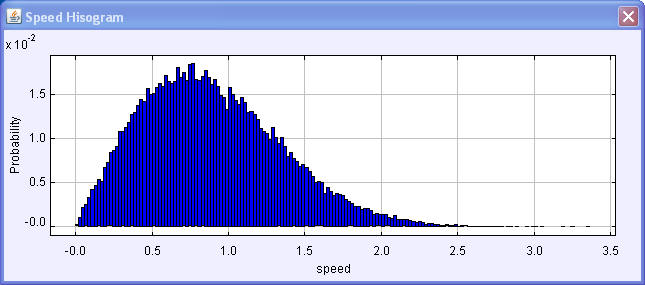

The average speed distribution for a 30 particle hard disk gas.
Hard Disk Gas models a two-dimensional gas by extending
the collision model to multiple particles. Particles are initialized with a speed v=1 in a random direction and move with constant velocity until a collision
event is detected. Conservation of momentum and energy are applied and the simulation is resumed until the next
collision event is detected. Although collision detection is not the most efficient computation algorithm for this problem, it is straightforward, accurate and
fast-enough for small numbers of particles to show the physics that gives rise to a simple model of an inert monatomic gas.
The Hard Disk Gas model is designed to teach Ejs modeling. In particular, collisions are detected using using EJS events and this is not efficient for large numbers of disks. Right click within the simulation to examine this model in the Ejs modeling and authoring tool. See:
The Easy Java Simulations (EJS) documentation can be downloaded from the ComPADRE Open Source Physics collection and from the Ejs website.
This simulation was created by Wolfgang Christian using the Easy Java Simulations (Ejs) modeling tool. You can examine and modify this simulation if you have Ejs installed by right-clicking within a plot and selecting "Open Ejs Model" from the pop-up menu. Information about Ejs is available at: <http://www.um.es/fem/Ejs/>.